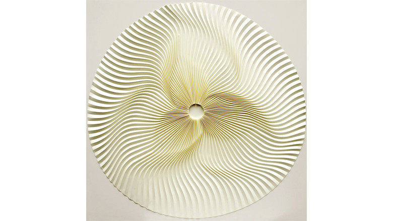

minimal

西村優子
http://www.yukonishimura.com/works-jp.php-どんな人
「紙を折る」という行為だけで作品を制作しているアーティストです。折りの可能性を追求しながら、繊細で綺麗な作品を多く制作しています。
-解説
紙を折り曲げることによってできる陰影で繊細な模様を表現しています。折り強さによって、影の強弱も変化し、淡いグラデーションがかかる部分と、はっきりコントラストが出ている部分に分かれ、見ごたえのある模様になっています。
-好きなところ
一枚の紙からこういった作品が作れるということに驚きました。実際に折っている映像がありました。 https://www.youtube.com/watch?v=8np2P7S0n5E とても繊細な作業ですね。